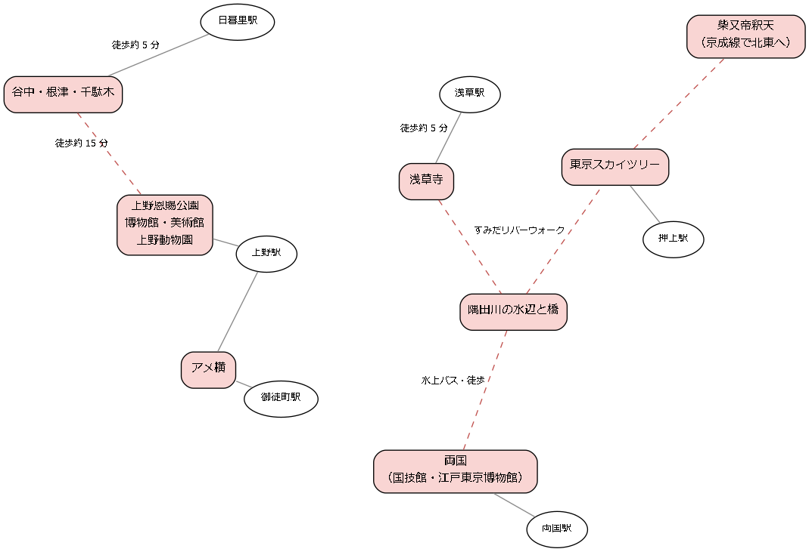

5. 上野・浅草・谷根千・両国
このエリアは、隅田川の西岸から東岸にかけて広がる、東京の代表的な下町である。江戸時代から庶民の信仰と行楽の場であった浅草寺や上野の山、相撲の町である両国、戦災を免れた古い街並みが残る谷中など、江戸から昭和の東京の面影を色濃く残す名所が集まっている。上野の山には国立の博物館や美術館が集まり、隅田川の対岸には東京スカイツリーがそびえ、新旧の東京を一度に楽しめるエリアでもある。

図: 上野・浅草・谷根千・両国の名所の位置関係（模式図）
5.1. 上野恩賜公園
博物館や美術館、動物園、寺社が集まる、東京を代表する公園である。恩賜公園の名のとおり、皇室から東京市に下賜された公園で、春には約 800 本の桜が咲く花見の名所としても知られる。
見どころ
西郷隆盛像：公園の南の入口に立つ、犬を連れた西郷隆盛の銅像である。1898 年に完成し、高村光雲が制作の中心となった。
清水観音堂：京都の清水寺を模して建てられた舞台造りのお堂で、重要文化財である。舞台の前には、歌川広重の浮世絵に描かれた、枝が輪を描く「月の松」が復元されている。
上野東照宮：徳川家康を祀る神社である。1651 年に造営された金色の社殿は重要文化財に指定されている。
不忍池：公園の西にある池で、中島に弁天堂が建つ。夏には池の南側の一面をハスの葉が覆い、7 月から 8 月にかけて花が咲く。
歴史・由来
上野の山は、江戸時代には寛永寺の境内であった。寛永寺は 1625 年に天海が創建した寺で、江戸城の北東の鬼門を守る寺とされ、徳川将軍家の菩提寺の一つとなった。1868 年の上野戦争で伽藍の多くが焼け、明治時代になって跡地が日本で最初の公園の一つに指定された。1924 年に宮内省から東京市に下賜され、上野恩賜公園となった。現在の寛永寺の本堂は、公園の北側にある。
楽しみ方のこつ
桜の時期は、公園の中央の通りが花見客で大変に混雑する。夜桜を楽しむ人も多い。博物館や美術館を目当てにする場合は、建物の中に入る前後に、公園の中の寺社を巡るとよい。
最寄り駅 |
JR 上野駅（公園口）から徒歩約 2 分、京成上野駅から徒歩約 1 分 |
|---|---|
料金 |
無料（園内の施設は有料のものがある） |
予約 |
不要 |
所要時間の目安 |
1〜2 時間（博物館や動物園を含めると半日〜1 日） |
公式サイト |
併せて訪れたい名所
公園の中に上野の博物館・美術館と上野動物園がある。不忍池の西には、明治時代の洋館が残る旧岩崎邸庭園（重要文化財）がある。南へ下るとアメ横に、北西へ歩くと谷中・根津・千駄木に至る。
5.2. 上野の博物館・美術館
上野恩賜公園の中とその周辺には、国立の博物館と美術館をはじめ、多くの文化施設が集まっている。一日で全部を回るのは難しいため、目当てを決めて出かけたい。
見どころ
施設 |
特徴 |
|---|---|
東京国立博物館 |
1872 年に創立された日本で最も古い博物館である。日本と東洋の美術品や考古資料を収蔵し、多くの国宝や重要文化財を展示している。本館と表慶館の建物そのものも重要文化財である。法隆寺に伝わった宝物を展示する法隆寺宝物館もある。 |
国立西洋美術館 |
実業家の松方幸次郎が集めた美術品（松方コレクション）を基に 1959 年に開館した。本館はフランスの建築家ル・コルビュジエの設計で、2016 年に世界遺産に登録された。前庭にはロダンの「考える人」「地獄の門」がある。 |
国立科学博物館 |
自然史と科学技術の総合的な博物館である。恐竜の骨格標本や、日本の自然と歴史を紹介する日本館が見どころで、日本館の建物は重要文化財である。 |
東京都美術館 |
1926 年に開館した日本で最初の公立美術館で、2026 年に開館 100 周年を迎えた。特別展のほか、美術団体の公募展が多く開かれる。 |
このほか、上野の森美術館などがある。なお、クラシック音楽の公演で知られる東京文化会館は、改修工事のため 2026 年 5 月から 2028 年度まで休館の予定である。
歴史・由来
明治政府は、寛永寺の跡地であった上野の山を、博覧会の会場や博物館の用地として整備した。1877 年には第 1 回内国勧業博覧会が開かれ、以後、上野は日本の文化と芸術の中心地の一つとなった。
楽しみ方のこつ
人気の特別展は、土日祝日を中心に入場待ちの列ができることが多い。日時指定の予約制の展覧会もあるため、各館の公式サイトで確認する。特別展とは別に、各館が所蔵する作品を展示する常設展（総合文化展、所蔵作品展などと呼ばれる）は比較的空いており、落ち着いて鑑賞できる。多くの館は月曜日が休館日である。
最寄り駅 |
JR 上野駅（公園口）から各館まで徒歩約 1〜10 分 |
|---|---|
料金 |
有料（展覧会によって異なる） |
予約 |
展覧会による |
所要時間の目安 |
1 館あたり 1.5〜3 時間 |
公式サイト |
併せて訪れたい名所
公園の中の上野恩賜公園の寺社と併せて回るとよい。
5.3. 上野動物園
1882 年に開園した、日本で最初の動物園である。約 300 種の動物が飼育されており、子どもから大人まで楽しめる。
見どころ
ゴリラ・トラの森：木々の間からニシローランドゴリラとスマトラトラを観察できる。
ハシビロコウ：動かない鳥として知られる大型の鳥で、根強い人気がある。
旧寛永寺五重塔：東園の中にある五重塔で、寛永寺の境内であった時代の名残である。1639 年に再建されたもので、重要文化財に指定されている。
不忍池の水辺：西園は不忍池に面しており、水辺の鳥やカバ、両生類・爬虫類を観察できる。
歴史・由来
上野動物園は、博物館の付属施設として開園した。1972 年に日中の国交正常化を記念して初めてジャイアントパンダが来園して以来、パンダは上野の象徴とされてきた。しかし、2026 年 1 月に双子のパンダが中国に返還され、上野動物園にパンダはいない状態となった。
楽しみ方のこつ
東園と西園の間には高低差があり、坂道を上り下りする。動物は朝や夕方の涼しい時間帯に活発に動くことが多い。月曜日は原則として休園である。
最寄り駅 |
JR 上野駅（公園口）から徒歩約 5 分 |
|---|---|
料金 |
有料 |
予約 |
不要（混雑する時期は事前の入園券の購入を求められることがある） |
所要時間の目安 |
2〜3 時間 |
公式サイト |
併せて訪れたい名所
西園の出口から不忍池に出て、上野恩賜公園の弁天堂に立ち寄るとよい。
5.4. アメ横
JR 上野駅から御徒町駅にかけて、高架の下と脇に続く商店街である。鮮魚、乾物、菓子、衣料品などを売る店が 400 店ほども並び、威勢のよい呼び込みの声が飛び交う。
見どころ
商店街の活気：商品を山積みにした店先や、値段の掛け合いなど、市場のような雰囲気を味わえる。
年末の買い出し：12 月の下旬には、正月用の魚介類や乾物を買い求める人で大変に混雑する。年末の風物詩としてテレビなどでよく紹介される。
歴史・由来
アメ横は、戦後の闇市から始まった。名前の由来には、飴を売る店が多かったことから「飴屋横丁」と呼ばれたという説と、アメリカ軍の放出品を売る店が多かったことからという説がある。
楽しみ方のこつ
年末を除けば、平日の昼間は比較的歩きやすい。立ち飲みや食べ歩きができる店も多く、上野の博物館の帰りに立ち寄るのもよい。
最寄り駅 |
JR 上野駅、JR 御徒町駅からすぐ |
|---|---|
料金 |
無料（買い物・飲食は有料） |
予約 |
不要 |
所要時間の目安 |
30 分〜1 時間 |
公式サイト |
併せて訪れたい名所
北の上野駅の先が上野恩賜公園である。
5.5. 浅草寺
都内で最も古い寺とされ、年間を通じて多くの参拝者が訪れる、東京を代表する寺院である。雷門から仲見世を抜けて本堂に至る参道は、江戸時代からにぎわいが続く門前町の姿を今に伝える。
見どころ
雷門：正式には「風雷神門」といい、門の左右に風神と雷神の像が置かれている。中央に下がる大きな赤い提灯は浅草の象徴である。
仲見世：雷門から宝蔵門まで約 250 m にわたって続く商店街で、人形焼、雷おこしなどの菓子や土産物の店が並ぶ。
本堂と五重塔：本堂は観音菩薩を本尊とする。本堂と五重塔はいずれも戦災で焼失し、戦後に再建されたものである。
浅草神社：本堂の東隣にある神社で、浅草寺の起源にかかわった 3 人を祀る。1649 年に徳川家光が建てた社殿が戦災を免れて残り、重要文化財に指定されている。
二天門：本堂の東側にある門で、江戸時代初期の建物が残り、重要文化財に指定されている。
歴史・由来
寺伝によれば、628 年に檜前浜成（ひのくまのはまなり）と竹成（たけなり）の兄弟が、隅田川で漁をしていた際に網にかかった観音像を、土師中知（はじのなかとも）が自宅に祀ったのが始まりとされる。浅草神社は、この 3 人を祀る神社であり、その祭礼が三社祭である。江戸時代には徳川家の祈願所となり、門前の浅草は江戸随一の盛り場として栄えた。
楽しみ方のこつ
境内には早朝から入ることができ、朝の 8 時ごろまでは参拝者が少なく静かである。仲見世の店が開く前の、シャッターに描かれた浅草の絵巻を眺めながら歩くのも楽しい。日没後には本堂、五重塔、雷門などがライトアップされる。7 月のほおずき市、12 月の羽子板市などの縁日も見どころである。
最寄り駅 |
東京メトロ銀座線・都営浅草線・東武線の浅草駅から雷門まで徒歩約 2〜5 分 |
|---|---|
料金 |
無料 |
予約 |
不要 |
所要時間の目安 |
1〜1.5 時間 |
公式サイト |
併せて訪れたい名所
5.6. 隅田川の水辺と橋
東京の東部を流れる隅田川は、江戸時代から花見、花火、舟遊びの場として親しまれてきた。川沿いには遊歩道が整備され、形の異なる橋を眺めながら歩いたり、水上バスで川を下ったりできる。
見どころ
隅田公園と墨堤の桜：浅草側と向島側の両岸に広がる公園で、桜並木が続く。向島側の土手は「墨堤（ぼくてい）」と呼ばれ、江戸時代に 8 代将軍の徳川吉宗が桜を植えさせたことで花見の名所となった。
震災復興の橋：関東大震災のあとに架けられた橋が今も残り、永代橋、清洲橋、勝鬨橋の 3 つは重要文化財に指定されている。アーチ形の永代橋と吊り橋形の清洲橋は、それぞれ男性的、女性的な美しさを持つといわれる。勝鬨橋は、かつて中央が開いて船を通した跳開橋である。
すみだリバーウォーク：浅草と東京スカイツリーの方面を結ぶ、鉄道の橋に併設された歩道橋である。足元のガラス張りの床から川面を見下ろせる。
隅田川テラス：川の両岸の堤防に沿って整備された遊歩道である。
歴史・由来
隅田川は、江戸時代には物資を運ぶ水運の大動脈であった。1733 年に始まった両国の川開きの花火は、現在の隅田川花火大会に受け継がれている。関東大震災では多くの橋が焼け落ちたため、復興事業として、燃えない鉄の橋が一つ一つ異なるデザインで架けられた。
楽しみ方のこつ
浅草から浜離宮、日の出桟橋、お台場へは水上バスが運航している。船からは多くの橋を下からくぐって見上げることができ、陸からとは違った景色を楽しめる。勝鬨橋の近くには、橋の歴史や仕組みを紹介する資料館（無料）がある。
最寄り駅 |
浅草駅（隅田公園）、両国駅、清澄白河駅（清洲橋）、勝どき駅（勝鬨橋）など |
|---|---|
料金 |
無料（水上バスは有料） |
予約 |
不要 |
所要時間の目安 |
歩く区間によって 30 分〜2 時間 |
公式サイト |
併せて訪れたい名所
5.7. 東京スカイツリー
高さ 634 m の、世界で最も高い自立式の電波塔である。2012 年に開業し、地上 350 m と 450 m の 2 つの展望台から関東平野を一望できる。
見どころ
天望デッキ（350 m）：大きなガラス窓から 360 度の眺めを楽しめる。床の一部がガラスになっており、真下をのぞき込める場所もある。
天望回廊（450 m）：天望デッキからさらにエレベーターで上がる展望台で、塔の外周をらせん状に上るガラス張りの回廊になっている。
ライトアップ：夜には塔全体が照らされ、隅田川の水の色をイメージした「粋」と、江戸紫をイメージした「雅」などの照明が日替わりで点灯する。
東京ソラマチ：塔の足元にある商業施設で、水族館やプラネタリウムもある。
歴史・由来
東京スカイツリーは、高層ビルの増加によって東京タワーからの電波が届きにくくなったことから、より高い電波塔として建設された。634 m という高さは、この地域の旧国名である「武蔵（むさし）」の語呂合わせで決められた。塔の中心には、五重塔の心柱の仕組みを参考にした、揺れを抑える構造が取り入れられている。
楽しみ方のこつ
天気の良い日には、富士山や筑波山まで見渡せる。空気の澄んだ冬の晴れた日の午前中が狙い目である。日時指定券を事前に購入しておくと、当日の待ち時間を減らせる。夕暮れ時は人気が高く混雑するが、昼の景色と夜景の両方を見られる。
最寄り駅 |
東武スカイツリーラインのとうきょうスカイツリー駅からすぐ、東京メトロ半蔵門線・都営浅草線・京成線の押上駅からすぐ |
|---|---|
料金 |
有料（展望台） |
予約 |
推奨（日時指定券） |
所要時間の目安 |
1.5〜2 時間（展望台のみ） |
公式サイト |
併せて訪れたい名所
5.8. 谷中・根津・千駄木
台東区と文京区にまたがる、寺と路地と商店街の街である。3 つの地名の頭文字を取って「谷根千（やねせん）」と呼ばれる。戦災を免れた木造の家並みや寺院が残り、昔ながらの東京の暮らしの雰囲気を味わえる。
見どころ
谷中霊園：明治時代に開かれた広い霊園で、江戸幕府の最後の将軍の徳川慶喜の墓所がある。中央の通りは桜並木で「さくら通り」と呼ばれる。
谷中銀座商店街：総菜店や菓子店など、約 60 店が並ぶ下町の商店街である。商店街の入口の階段は「夕やけだんだん」と呼ばれ、夕日の名所として知られる。
寺町：谷中には大小の寺が 70 ほども集まり、寺の塀が続く静かな路地を歩ける。
朝倉彫塑館：彫刻家の朝倉文夫のアトリエと住居を公開した美術館で、中庭の池や屋上庭園が美しい。
へび道：かつての川を埋め立てた道で、名前のとおり蛇のように曲がりくねっている。
歴史・由来
谷中は、江戸時代の初めに神田などから多くの寺が移ってきたことで寺町となった。明治以降は、上野の美術学校（現在の東京藝術大学）に近いことから、芸術家や文人が多く住んだ。千駄木には森鷗外や夏目漱石が住んだ家の跡があり、森鷗外の旧居の跡には文京区立森鷗外記念館が建っている。
楽しみ方のこつ
日暮里駅から谷中霊園、谷中銀座、へび道を通って根津神社に至るのが代表的な散歩の道筋である（谷根千散歩）。見どころが広く点在しているため、半日をかけて路地を歩くつもりで出かけたい。住宅地であるため、住宅地での配慮を忘れないようにする。
最寄り駅 |
JR・京成線の日暮里駅、東京メトロ千代田線の千駄木駅・根津駅 |
|---|---|
料金 |
無料（朝倉彫塑館などの施設は有料） |
予約 |
不要 |
所要時間の目安 |
2〜4 時間 |
公式サイト |
併せて訪れたい名所
5.9. 両国
国技館のある相撲の町で、江戸の歴史を学べる博物館や、浮世絵師の葛飾北斎ゆかりの美術館もある。駅の周辺には相撲部屋が点在し、ちゃんこ鍋の店も多い。
見どころ
両国国技館：大相撲の本場所のうち、1 月、5 月、9 月の場所が開かれる。国技館の中には相撲の歴史を紹介する相撲博物館がある。
江戸東京博物館：江戸と東京の歴史と文化を、実物の資料や大型の模型で紹介する博物館である。原寸大で復元した日本橋の一部や、芝居小屋の中村座などが見どころである。約 4 年の改修工事を経て、2026 年 3 月 31 日に再開した。
旧安田庭園：江戸時代の大名屋敷の庭園を受け継いだ、池を中心とした回遊式庭園で、無料で入園できる。
すみだ北斎美術館：墨田区で生まれ育った葛飾北斎とその門人の作品を紹介する美術館である。
回向院：1657 年の明暦の大火の犠牲者を弔うために建てられた寺である。江戸時代の後期には境内で勧進相撲が開かれ、両国が相撲の町となるきっかけとなった。
歴史・由来
両国の名は、隅田川に架けられた両国橋が、武蔵国と下総国の 2 つの国を結んだことに由来する。橋の西詰の広小路は見世物小屋が並ぶ江戸有数の盛り場であった。
楽しみ方のこつ
本場所の期間中は、国技館の周りに力士の名前を染めたのぼりが立ち並び、会場入りする力士の姿を見かけることもある。江戸東京博物館は展示の量が多いため、時間に余裕を持って訪れたい。
最寄り駅 |
JR 両国駅から徒歩約 1〜5 分、都営大江戸線の両国駅から徒歩約 1〜5 分 |
|---|---|
料金 |
一部有料（旧安田庭園は無料、博物館・美術館・相撲の観戦は有料） |
予約 |
不要（相撲の観戦はチケットの購入が必要） |
所要時間の目安 |
2〜4 時間 |
公式サイト |
併せて訪れたい名所
隅田川沿いの隅田川の水辺と橋を歩いて、清洲橋の方面に向かうのもよい。
5.10. 柴又帝釈天
葛飾区柴又にある日蓮宗の寺で、正式な名前を経栄山題経寺という。映画「男はつらいよ」の舞台として知られ、参道には草だんごの店が並ぶ。
見どころ
帝釈堂の彫刻：帝釈堂の外壁は、法華経の説話を題材とした精巧な木彫りの彫刻で覆われている。彫刻は回廊から間近に鑑賞できる（有料）。
邃渓園（すいけいえん）：彫刻と同じく有料で公開されている庭園で、回廊から眺める。
参道：駅から帝釈天まで続く短い参道に、草だんごや煎餅の店、川魚料理の店が並ぶ。
矢切の渡し：帝釈天の裏手の江戸川にある渡し船で、千葉県松戸市の矢切と結んでいる。都内に残る唯一の渡し船である。
歴史・由来
題経寺は江戸時代の初めの 1629 年に創建された。江戸時代の後期に、なくなっていた本尊の板本尊が見つかったのが庚申の日であったことから、庚申の日が縁日となり、帝釈天への参詣が盛んになった。1969 年に始まった映画「男はつらいよ」で、主人公の寅さんの故郷として描かれ、全国に知られるようになった。柴又の街並みは、2018 年に都内で初めて国の重要文化的景観に選ばれた。
楽しみ方のこつ
駅前には寅さんの銅像があり、近くの葛飾柴又寅さん記念館では映画のセットなどを見られる。矢切の渡しは運航日と時間が限られているため、事前に確認しておきたい。
最寄り駅 |
京成金町線の柴又駅から徒歩約 3 分 |
|---|---|
料金 |
無料（彫刻ギャラリーと庭園は有料） |
予約 |
不要 |
所要時間の目安 |
1.5〜2 時間 |
公式サイト |
併せて訪れたい名所
京成線で押上駅に向かえば東京スカイツリーに寄れる。